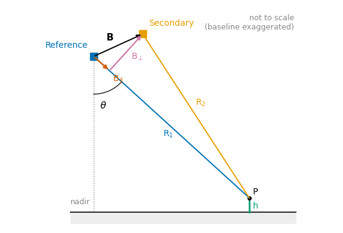

| SAR Concepts: InSAR Fundamentals | |
SAR interferometry (InSAR) compares the phase of two complex SAR images of the same area, taken from almost the same position. The phase difference measures changes in the radar-to-ground distance to a fraction of the wavelength, so it carries topography, ground motion and atmospheric delay. To read an interferogram you have to know which of these terms is present and how the baseline geometry scales them.
Each pixel of a single-look complex (SLC) image is a complex number s = |s| exp(jψ). Its phase ψ is the two-way path phase −4πR/λ (R is the slant range, λ the radar wavelength) plus a scattering phase that is random from pixel to pixel. If the scatterers have not changed, the scattering phase is the same in both images and cancels in the product of the Reference image with the complex conjugate of the Secondary image:
I = sref · ssec* = |sref| |ssec| exp(jφ), φ = ψref − ψsec
With the phase convention above, this gives
φ = (4π/λ) (Rsec − Rref) (modulo 2π)
SNAP uses this Reference × conj(Secondary) order. See Displacement for how the sign carries through to displacement products.
φ = φflat + φtopo + φdefo + φatmo + φorbit + φnoise
Only φ modulo 2π is observed. SNAP shows it wrapped into (−π, π]. One full colour cycle is a fringe. For deformation, one fringe is λ/2 of LOS motion: about 2.8 cm at C-band, 1.6 cm at X-band and 12 cm at L-band. For topography, one fringe is the height of ambiguity defined below. Recovering the absolute phase is the job of phase unwrapping.
The baseline B is the vector between the two antenna positions. Its component along the line of sight, B∥, mainly adds the smooth flat-Earth phase. The component at right angles to it, the perpendicular baseline B⊥, sets the sensitivity to height. The temporal baseline is the time between the two acquisitions; it controls how much the scene and the atmosphere change.

Figure 1. Repeat-pass geometry. The baseline B splits into B∥ along the Reference line of sight and B⊥ across it. A target P at height h is seen at ranges R1 and R2; θ is the look angle. The formulas below use the incidence angle, which equals the look angle only on a flat Earth. Not to scale.
For repeat-pass (monostatic) InSAR, a height change h changes the phase by (in magnitude)
Δφtopo = 4π B⊥ h / (λ R sin θ)
where θ is the incidence angle (equal to the look angle on a flat Earth). The height that produces one fringe is the height of ambiguity:
h2π = λ R sin θ / (2 B⊥)
For single-pass bistatic systems such as TanDEM-X, where only one antenna transmits, the factor 2 is dropped. A small h2π means high height sensitivity: good for DEM generation, bad for deformation, because DEM errors leak into the phase as residual topography.
| Mission (mode) | λ | One fringe (λ/2) | R | θ (incidence) | Example B⊥ | h2π |
|---|---|---|---|---|---|---|
| Sentinel-1 (IW), C-band | 5.55 cm | 2.8 cm | 865 km | 39° | 50 m / 150 m | 302 m / 101 m |
| TerraSAR-X (StripMap), X-band | 3.11 cm | 1.6 cm | 616 km | 35° | 100 m / 300 m | 55 m / 18 m |
| ALOS-2 (StripMap), L-band | ≈ 24 cm | ≈ 12 cm | 750 km | 35° | 300 m / 1000 m | 171 m / 51 m |
| NISAR, L-band | ≈ 24 cm | ≈ 12 cm | 909 km | 37° | 200 m / 500 m | 326 m / 130 m |
Table 1. Height of ambiguity for repeat-pass pairs. Slant ranges are computed for a spherical Earth from orbit heights of 693, 514, 628 and 747 km. The B⊥ values are examples, not mission specifications; the InSAR Stack Overview tool lists the B⊥ of your pairs.
The two images see the ground from slightly different angles, so their range spectra are shifted against each other. When the shift equals the range bandwidth, nothing is common and the interferogram is pure noise. This happens at the critical baseline
B⊥,crit = λ R tan θ / (2 ρr)
where ρr is the slant-range resolution. On flat terrain the geometric coherence falls roughly linearly, as 1 − B⊥/B⊥,crit. Terrain sloping toward the radar reduces the effective incidence angle and with it B⊥,crit. For Sentinel-1 IW (about 48 MHz range bandwidth, ρr ≈ 3.1 m) B⊥,crit is about 6 km, far larger than typical baselines. For ERS (ρr ≈ 9.6 m) it was about 1.1 km and limited many pairs.
The total coherence is approximately the product of independent factors:
Coregistration errors add a further loss; see TOPS for why Sentinel-1 IW needs azimuth coregistration to about a thousandth of a pixel.
Interferogram) forms Reference × conj(Secondary) for each Secondary
in a coregistered stack. By default it subtracts the flat-Earth phase (polynomial of degree 5 fitted to 501
points); Subtract topographic phase is off by default. It writes i_ifg_<tag> and
q_ifg_<tag>, a virtual Phase_ifg_<tag> band (unit phase,
radians) and, by default, coh_<tag>. The tag is
<subswath>_<pol>_<ref-date>_<sec-date> (subswath and polarisation are omitted when the product has none), for example
Phase_ifg_IW2_VV_03Jan2024_15Jan2024.i and q
bands, which is a complex average of the interferogram.Workflows: Sentinel-1 TOPS DInSAR and Stripmap DInSAR.